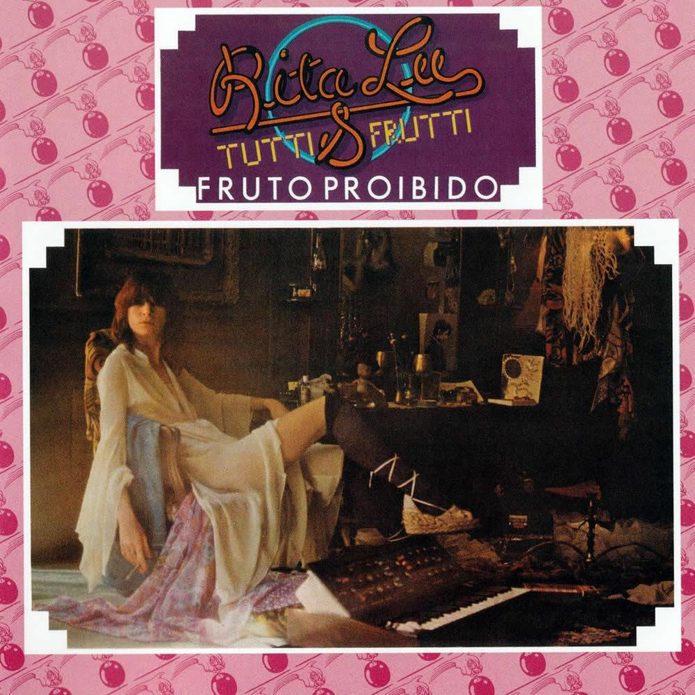
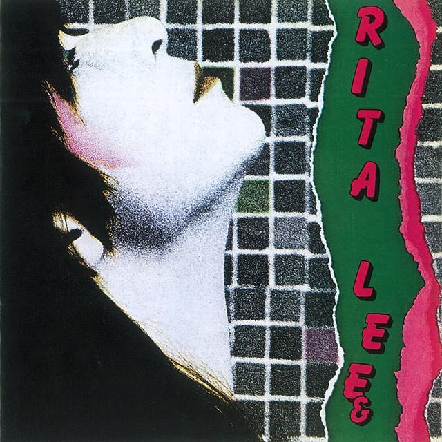
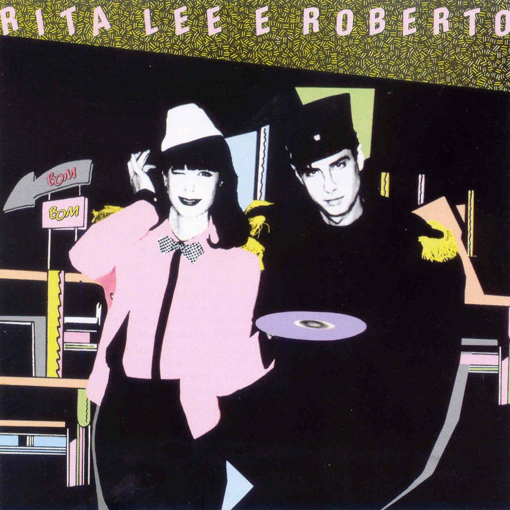

1975Fruto Proibido
Um dos discos mais importantes da carreira de Rita Lee, com grandes sucessos do rock.
1947 - 2023
Conheça a história, os discos e as curiosidades da cantora que marcou a música brasileira.
Rita Lee foi uma cantora, compositora e escritora brasileira, considerada uma das artistas mais importantes da história da música nacional.
Nascida em São Paulo, no dia 31 de dezembro de 1947, ficou conhecida por sua personalidade irreverente, criatividade e talento musical.
Fez parte da banda Os Mutantes e também construiu uma carreira solo de grande sucesso, misturando rock, pop e outros estilos musicais.
Rita Lee faleceu em 8 de maio de 2023, deixando um legado importante para a cultura brasileira.

1975Um dos discos mais importantes da carreira de Rita Lee, com grandes sucessos do rock.
Álbum que apresenta músicas marcantes e mostra a personalidade da cantora.

1981Um trabalho que mistura diferentes sonoridades e apresenta grandes canções.

1983Um álbum que faz parte da trajetória musical da artista nos anos 1980.
Um disco que apresenta novas ideias e diferentes influências musicais.
As informações desta página foram pesquisadas em fontes sobre a vida e a carreira da cantora.